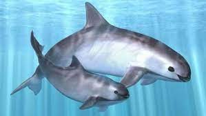

En sonora existe 13 especies de aves en peligro de extincion por causas como destruccion de habitat, cambios bruscos de clima y/o enfermedades de acuerdo a especialistas en ecologia estas son: aguila solitaria, cabeciblanca, mergulo de craveri, pato real, cisne de tundra, cascanueces americanos, chara de beechy. Asi como codorniz mascarita, pardela mexicana,guacamaya verde, loro corona-lila cotorra cerrana occidental y vireo gorra negra, el aguila solitaria y la charra de beechy se ubican en el sureste de sonora

